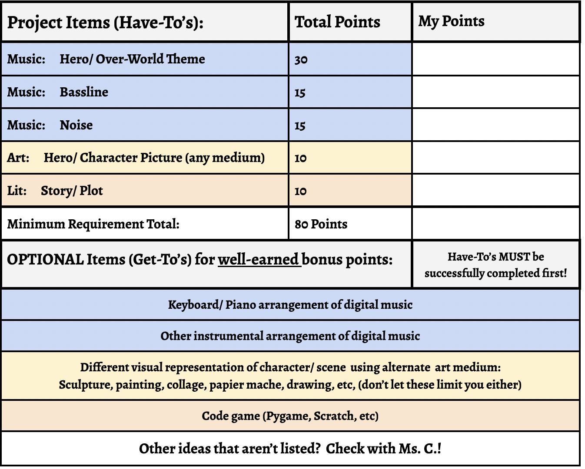

One Person Project
A one-person project is one in which ONLY ONE student is responsible for the completion of the required elements
AND for the full presentation. Please see below for the Solo Project Rubric image.
Click here to see the detailed rubric for a ONE PERSON PROJECT
Remember, the "Have-To's" have to be completed first!

Some pros for working alone:
- Full control over the ENTIRE project.
- You can complete this project how you want with your own ideas.
- Your vision and ideas get to shine.
- You can show off your own skills throughout the process.
Some cons for working alone:
- You are responsible for completing and submitting ALL of the elements on your own.
- You are presenting this project to your classmates by yourself.